FastCGI Web Development with Harbour
 Author: Eric Lendvai
Author: Eric Lendvai
Table of Contents
- Target Audience
- Prerequisites
- Introduction
- Current Implementation Status
- Installing MSVC Compiler
- Compiling Habour in 64-bit mode with MSVC
- Installing harbour_FastCGI
- Installing Apache
- Configuring Apache For harbour_FastCGI
- Your First FastCGI Web Site
- Using Postman
- FCGITaskManager program
- Debugging with VSCODE
- Extra Debugging Options under Windows
- Anatomy of the echo app
- Conclusion
Target Audience
- Harbour developers interested in developing Web Apps.
- Any developers interested in advancing their knowledge in using VSCODE, code editor and debugger.
Prerequisites
- Set up your development environment, and use all the tools created in the article, How to Install Harbour on Windows.
- Basic knowledge of VSCODE (Microsoft Visual Studio Code) is recommended. See article Developing and Debugging Harbour Programs with VSCODE
- Basic knowledge of HTML.
Introduction
A brief history:
- Clipper, first released in 1985, was a language that mainly targeted desktop applications.
See https://en.wikipedia.org/wiki/Clipper_(programming_language) - Harbour was created in 1999 as an open-source and free replacement of Clipper.
See https://en.wikipedia.org/wiki/Harbour_(programming_language) - CGI (Common Gateway Interface) was created in 1993 as a specification to allow command line executable, called by web servers, to renter web pages.
- FastCGI was introduced in 1996 as a protocol to help
interface applications with web servers. Its main focus was performance
and support to many computer languages.
See https://fastcgi-archives.github.io/FastCGI_Developers_Kit_FastCGI.html
Web technologies:
All
web apps are simply programs that listen on an IP and Port for a
request, usually made by a web browser, and return mainly web pages,
which are simply text formatted as HTML. Some major enhancements were
made since the inception of the web, for example, supporting multimedia
output, enhancements of web pages with JavaScript + CSS and Rest APIs.
With the introduction of web sockets the concept of request/response
became bidirectional. But this will not be covered in this article.
First
we need to understand that there is a difference between waiting and
responding to a request, versus actually processing a request. I
purposely use the term "Request" to cover requests for web pages, images
and other multimedia files, and REST API requests. Some programs will
do both the waiting/responding and processing. For example: Node.js (All
in JavaScript) and hbhttpd (a contrib of harbour).
But
most web apps rely on a web server to do the waiting for a request, and
relay that request to a web app to process and create a response, which
is then forwarded back to the user.
Having a web server separate from a processing web app provides some of the following advantages:
- Static pages or image files can be returned by the web server directly, without needed to call a web app
- Requests can be queued and sent to multiple processing (web) apps
- Encryption (SSL) is processed by the web server directly.
- Web servers have less of a chance to crash, since they are rarely updated (in comparison to a web app).
Web servers have a few disadvantages:
- Complex to configure
- Extra latency since they have to communicate with an actual web app
Node.js
is one of the most popular webserver/framework to create web apps
because it requires very little configuration, and it is very fast to
respond since your programs run inside the web server. But you
need to code your entire program in JavaScript, and basically distribute
source code that is fragmented in many files and relyies on many
external dependencies (packages).
hbhttpd,
one of the original solutions to create web apps in Harbour, will not
scale well for high traffic, and if it crashes, the entire server is
down. But the biggest problem is that very few developers are using it.
It relies on the multithreading support of Harbour, which can be hard
for programmers to deal with.
Let's now look at
solutions that relies on web servers. In this article, I will mainly
talk about Apache web servers and IIS servers (the Microsoft Windows web
server).
The first issue to think about is:
where will your program run? Will it run in the process (executable) of
the web server, or as an external executable?
Apache
(Windows, Unix ...) has something called modules, also known as mod.
There is an implementation of harbour web apps called mod_harbour.so.
Under windows, this is a dll that runs in the Apache main exe
(httpd.exe). The main advantage could have been speed, but the main
problem is that if your module crashes, it can bring down the entire web
server. The other problem is that the harbour main lib/vm has to be
restarted at every page request, and there are problems with heavy loads
dues to failures in handling threads. In IIS, mod_harbour is an ISAPI
Extension, which is also a dll, and has the same issues as in Harbour.
To
protect the web server from crashing, the easiest solution was to
create CGI apps, which are single threaded Harbour exes that will read
the standard input for the request, and send to the standard output a
response. But again the problem is that every page request forces the
web server to start an entire new sub-process, load the entire Harbour
vm (virtual machine), and open your tables or setup SQL connections.
This solution is relatively slow. On most high-end computers, for a
simple "hello world" page, you would be able to handle 10 to 20 requests
per seconds per CPU.
So one of the best
solutions was to make CGI faster ... hence FastCGI. We keep the concept
of an external EXE to protect the web server from crashing, but instead
of starting / closing the program at every request, your EXE has a main
loop that waits for requests. Once it receives a request, it builds the
response (web page) and restarts the loop to wait. The other advantage
is that you can keep your table and SQL connections open between
requests.
As developers we know that not
everything is perfect, like having memory leaks and crashes. However,
the FastCGI protocol, we can specify how many requests your EXE should
handle before it is shutdown and then restarted (by the web server), or
if you could handle that auto shutdown yourself. The starting /
restarting of your FastCGI programs is all handled by the web server,
and the number of waiting FastCGI EXEs can also be configured.
What
made it challenging to bring FastCGI to Harbour was that the libraries
to handle the communication between the web servers and your FastCGI
EXEs was only developed for the most popular languages. If you check the
list of computer languages at https://en.wikipedia.org/wiki/FastCGI
you will not see Harbour. Luckily, C was the first supported language,
and Harbour is coded in C as well and compiles down to C.
Therefore,
I believe creating FastCGI apps in Harbour is one of the most powerful
methods for creating web apps: we develop using a 4GL language, Harbour,
that was designed to handle data as its core principle, and it all gets
generated to C, the fastest language used by virtually all operating
systems, which can then be packaged into a single EXE with no
dependencies, if you choose so.
As for speed?
On the same machine I tested the "Hello World" CGI app before, we now
can process between 300 to 400 requests per seconds per CPU.
For more information about FastCGI, see the following web site: http://www.citycat.ru/doc/FastCGI/fcdk/doc/fastcgi-prog-guide/ch1intro.htm
Current Implementation Status
The project can be downloaded / cloned / forked from https://github.com/EricLendvai/harbour_FastCGI
If you like this project, please press the Star to let other users on GitHub know to you value this repo.
Currently
the code is only compatible with Microsoft Windows and Apache 2.4 Do
not use IIS for now, since there are crashes for any FastCGI exe if a
web page is called via a POST request. At least this was an issue I
could replicate under Windows 10 Pro.
All
documentation in this article will be for development under Microsoft
Windows, Apache web servers, and MSCV (Visual Studio 2019) C compiler.
Also, this article will be later updated for support to Unix, Mingw, and
other platforms and compilers.
Installing MSVC Compiler
Currently
under Microsoft Windows, the FastCGI developers kit has to be compiled
under MSVC, which can only be installed with Visual Studio. Since the
FastCGI support library will be made using that compiler, your FastCGI
EXEs will also have to be compiled by Visual Studio. Microsoft no longer
makes it possible to install their C compiler outside of Visual Studio.
Luckily, they have a free edition if you are not part of a
small-to-large corporate commercial developer team.
There is not a separate C compiler; it is part of their C++ one. Mingw is also distributed as a C and C++ compiler.
Go to https://visualstudio.microsoft.com/downloads/ to download any version of Visual Studio 2019.
You will first download a small exe which will then let you decide which component to install.
At
some point, to continue using Visual Studio, you will need to create a
Microsoft account, which must be linked to a valid email address.
At first the small install loader will display a dialog like this:
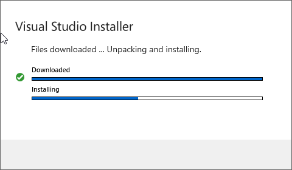
Once that first step is completed, you will see the following dialog box. Select "Desktop development in C++".
If you are worried about your internet connection, you may also select "Download all, then install".
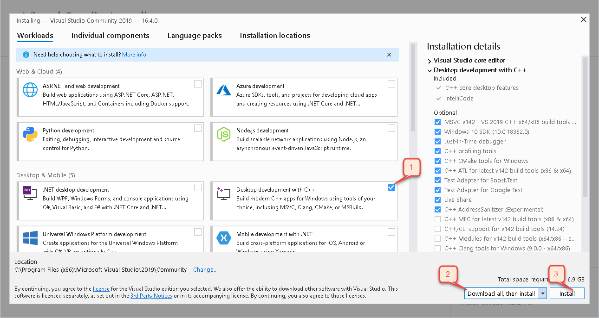
Get ready for a 1.8 Gb download ....
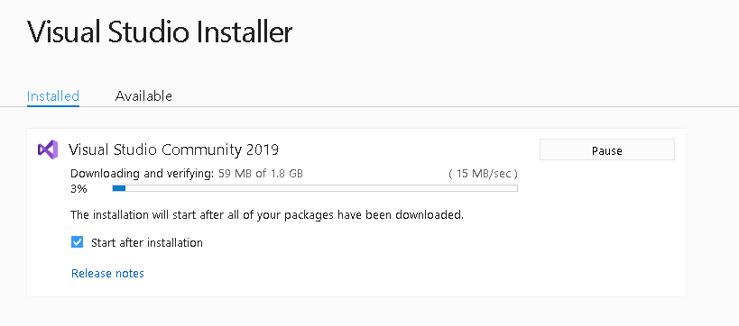
Initially you don't need a Microsoft Account, but you will be required to make one later on.
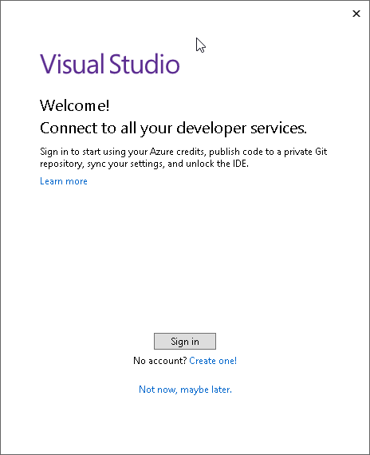
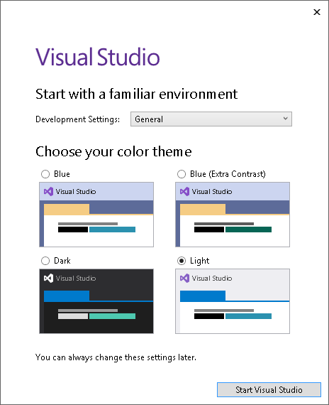
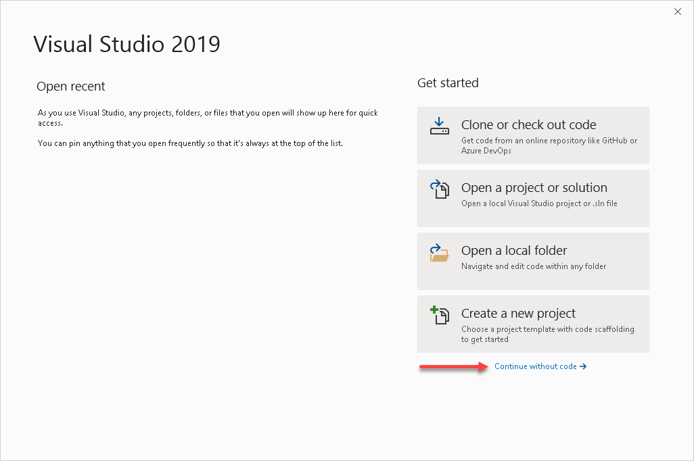
At
this point, you may close Visual Studio. Most of the time you will be
using hbmk2 (a Harbour make program) to compile and invoke the Microsoft
C compiler.
Compiling Habour in 64-bit mode with MSVC
Create the following batch file, and place it in your C:\HarbourTools\ folder. Please see the article https://harbour.wiki/index.asp?page=PublicArticles&mode=show&id=190129210053&sig=7790451073 .
A
single copy of Harbour, c:\Harbour, can be compiled with multiple C
compilers. For example, on my computer, I can now use Mingw 32-bit and
64-bit, and now, MSVC 64-bit.
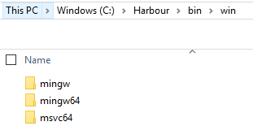
Ensure you change the line 3 in the new batch file to point to the folder where your copy of Visual Studio is installed.
The best is to run your new CompileHarbourMSVC64.bat from an administrator command prompt.
You will probably see some errors. Those are usually related to contribs (packages) that are not compatible with Windows.
Executing this batch file is needed the first time plus every time you update your copy of Harbour or Visual Studio.
Please remember that "Visual Studio" is not the same as "Visual Studio Code".
The first one is the tool-set Microsoft created and sells to compile C,C++,.Net programs...
And
"Visual Studio Code", also known as VSCODE, is an open source editor
that was created at first by Microsoft, but now has more than 800
contributors.
| File: CompileHarbourMSVC64.bat |
@echo offcall "%ProgramFiles(x86)%\Microsoft Visual Studio\2019\Community\VC\Auxiliary\Build\vcvarsall.bat" x86_amd64set HB_COMPILER=msvc64 :: set HB_BUILD_MODE=c :: set HB_BUILD_CONTRIBS=yes:: set HB_WITH_OPENSSL=c:\OpenSSL-Win32\include:: set HB_WITH_CURL=c:\curl\includec:cd c:\Harbour"C:\WINDOWS\system32\cmd.exe" /k win-make
Installing harbour_FastCGI
All the source code you need to create your first FastCGI Harbour app can be downloaded from https://github.com/EricLendvai/harbour_FastCGI
If you are familiar with Git commands, create a local folder, and use the "git clone" command.
If you are not familiar with Git, you can download a zip file of the entire repo and place it in a local folder.
The
advantage of using the Git tool is that you can easily update your
local copy in the future, without having to re-download the entire
content as a zip. Once you are familiar with the project, you could
submit changes, such as pull requests, to the repo.
Forthis
article, I will install the repo in a folder R:\Harbour_FastCGI\, and
later, I will create a folder R:\Harbour_websites\. Please adjust the
drive letter and path to your system.
Installing Apache
The following instructions are applicable to Windows and Apache 2.4 web server, also known as httpd.
In
theory, you should be able to download the source of Apache web server
and the mod_fcgid module and recompile them with Visual Studio, but I
was unsuccessful in doing so. I was able to recompile mod_fcgid and
Visual Studio 2019 with the help of hbmk2, but I still had to ignore a
few compilation errors.
Luckily, developing
FastCGI programs do not require the recompilation of Apache or its
modules, since we are going to build plain console EXEs.
The main web site for the Apache web server is at: https://httpd.apache.org/
I recommend you to download the Windows binaries from https://www.apachelounge.com/download/
There are 3 files you will need to download and install:
- httpd-2.4.41-win64-VS16.zip (or newer)
Unzip in a folder such as C:\Apache24-64\ - vc_redist_x64 (it is a link close to the top of the web page) and run the downloaded file.
This will install the C runtime used by httpd (Apache web server) - mod_fcgid-2.3.10-win64-VS16.zip (or newer)
Unzip and place mod_fcgid.so in C:\Apache24-64\modules\
I
am targeting the 64-bit environment, but you should be able to make
this also work in 32-bit. You could event run both 64-bit and 32-bit
Apache web server at the same time, so long as you "bind" them to
different IPs of ports.
Edit the file "C:\Apache24-64\conf\httpd.conf" with notepad, for example, and make the following changes:
- Edit the line that starts with "Define SRVROOT" and point it to "c:/Apache24-64".
- Change the line "#ServerName www.example.com:80" to, for example, "ServerName localhost:8164".
The "#" sign is the method used to mark a line as comment. localhost:8164 is to specify a host name and port. Every machine has a "localhost", and to not conflict with IIS or any other web servers, I chose 8164. But use any port you prefer, of course. - Change the line "Listen 80" to "Listen 8164".
There
are two ways to run the Apache web server: as a Windows Service or
starting the c:\Apache24-64\bin\httpd.exe (from command prompt or a
shortcut). If you use a command prompt, once in the bin folder, use
".\httpd" instead for "httpd".
When debugging FastCGI EXEs, httpd.exe must be started interactively,
and not as a service, since we must have a visible application window.
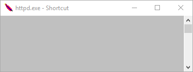
To test if the web server works, open your browser and go to http://127.0.0.1:8164/
You should see the words "It works!"
To stop the web server, focus on the httpd program, then press CTRL+C. You may have to do this more than once.
The
following is a list of commands you can run from the C:\Apache24-64\bin
folder to install, start, stop and uninstall, httpd as a Windows
service.
- Install = httpd.exe -k install -n "Apache24-64"
- Start = httpd.exe -k start -n "Apache24-64"
- Stop = httpd.exe -k stop -n "Apache24-64"
- Uninstall = httpd.exe -k uninstall -n "Apache24-64"
Remember
that if you want to run the httpd interactively (for debugging
purposes, for example), you will need to stop the "Apache24-64" service.
Configuring Apache For harbour_FastCGI
All
configurations in Apache can be done using the text file "httpd.conf" ,
located in the "conf" sub-folder. In this article, since we placed
Apache in the folder "C:\Apache24-64\", the configuration file is
"C:\Apache24-64\conf\httpd.conf".
The
configuration file is read (used) only when Apache starts, so either
when "httpd.exe" is run, or the Apache service is started. Any changes
you do to the config file will force a restart, which will bring down
every hosted websites.
Fortunately, there is a
way to have some of the configuration settings reloaded at every page
request. By placing a text file named ".htaccess" in the directory of
the published virtual folder, meaning the /website/ sub-folder of your
website, and using a security setting in "httpd.conf" to allow
processing of the ".htaccess" file, you will be able to minimize the
need to restart the Apache web server.
In this
article, we are going to review two FastCGI applications: an "Echo"
application and an emulator/in-place replacement of the FiveTechSoft /
mod_harbour project (https://github.com/FiveTechSoft/mod_harbour).
For
the "Echo" application, we are going to use an ".htaccess" to
demonstrate how to change, on the fly, versions of the FastCGI EXE.
The
"Echo" application will demonstrate how GET and POST requests can be
processed. It can handle input fields and uploaded files. We will be
using Postman (https://www.getpostman.com) to demonstrate POST requests.
The
"mod_harbour" application will not feature such a dynamic version
switching system, since it is more of a provider to service plain PRG
files. This will create an environment that matches the behavior of PHP,
where source code can be changed on the fly. The main reason of having a
mod_harbour FastCGI EXE is for increased performance and to be able to
handle large number of concurrent web page requests.
A few key concepts about the httpd.conf file:
- Apache modules provide extra features to the server. We are only loading the minimum set, to make the server as fast as possible.
- Under Windows Apache, modules are simply ".dll" files renamed with the extention ".so".
- In addition to some of the default modules Apache comes with, we need to load "rewrite_module" and "fcgid_module" modules.
- The "<IfModule>" regions will ensure only settings will be applied if the referred to module is loaded.
- The "<Files>" regions will encapsulate setting only to a certain set of files. Case sensitive!
- The "<FilesMatch>" regions behaves similarly to "<Files>" except regular-expressions can be used. So you could make it case-insensitive.
- The "<VirtualHost>" regions encapsulate settings of a Virtual Folder or entire domain (web site).
- The "<Directory>" regions could be used at the top level, but is best used inside a "<VirtualHost>" region.
Please backup / rename the httpd.conf file that you already have, and use the file below as your starting point.
To
conserve space, all the Apache original comment lines are not in the
following file. So please keep the original file on hand so you can
refer to it, and bring in any extra modules and settings you may need
later on. The following conf file has inbedded comments to help you
understand most settings.
| File: httpd.conf |
# Specify the location of the Apache server itself.Define SRVROOT "C:/Apache24-64"ServerRoot "${SRVROOT}"# This will in Apache to bind (listen) to port 127.0.0.1 aka localhost, and port 8164Listen 127.0.0.1:8164LoadModule alias_module modules/mod_alias.soLoadModule authz_core_module modules/mod_authz_core.soLoadModule dir_module modules/mod_dir.soLoadModule env_module modules/mod_env.soLoadModule include_module modules/mod_include.soLoadModule mime_module modules/mod_mime.soLoadModule setenvif_module modules/mod_setenvif.so# To change page/file extensionsLoadModule rewrite_module modules/mod_rewrite.so# This is the FastCGI Apache module that will manage single threaded Harbour FastCGI EXEsLoadModule fcgid_module modules/mod_fcgid.so<IfModule unixd_module> User daemon Group daemon</IfModule># Configuration for any FastCGI executable.<IfModule mod_fcgid.c># Should set at least as many Processes as there are FastCGI apps,# meaning number for Virtual folders with fcgi handlers. FcgidMaxProcesses 10# Make the following value big enough so to have the debugger stay open long enough if needed.# 1800 means 30 minutes. FcgidIOTimeout 1800# Use smaller value in case of memory leaks# This setting would do a forceful shutdown of FastCGI EXEs.# See Harbour_FastCGI for a soft shutdown settings instead. FcgidMaxRequestsPerProcess 1000000#Example of setting up some Environment Variables FcgidInitialEnv HB_ACCOUNT_ID UserName FcgidInitialEnv HB_ACCOUNT_PASSWORD Password</IfModule># 'Main' server configurationServerAdmin me@mydomain.comServerName localhost-apache-64:8164# By default we will forbid the use of .htaccess and turn off all access rights from all IPs<Directory /> AllowOverride none Require all denied</Directory>#===============================================================================================================# The following lines prevent .htaccess and .htpasswd files from being viewed by Web clients.# This is an extra setting in case the global access right was allowed.# ensure the .ht files are store with lower case file names.# Apache is case sensitive on non Windows OS.<Files ".ht*"> Require all denied</Files># See default httpd.conf for more explanation about the following settings<IfModule headers_module> RequestHeader unset Proxy early</IfModule><IfModule mime_module> TypesConfig conf/mime.types AddType application/x-compress .Z AddType application/x-gzip .gz .tgz</IfModule># Configure mod_proxy_html to understand HTML4/XHTML1<IfModule proxy_html_module> Include conf/extra/proxy-html.conf</IfModule># Secure (SSL/TLS) connections<IfModule ssl_module> SSLRandomSeed startup builtin SSLRandomSeed connect builtin</IfModule>#===============================================================================================================# Using a VirtualHost section to configure which domain to process.# Multiple similar sections could be configures to host multiple domains.<VirtualHost *:8164># localhost is 127.0.0.1, which is the IP the server is "Listen"ing on ServerName localhost# Folder to use for "/" requests. The "Directory" section below is used to setup behavior in the root URL. DocumentRoot "C:/Apache64Root/"# Setting two virtual folders, to different FastCGI apps. Alias /fcgi_echo/ "C:/Harbour_websites/fcgi_echo/website/" Alias /fcgi_localsandbox/ "C:/Harbour_websites/fcgi_LocalSandbox/website/"#----------------------------------------------------------------------------------<Directory "C:/Apache64Root/"> Require all granted RewriteEngine On <IfModule dir_module># Method to tell which file to serve if not page name is provided. Similar to IIS's "default document" setting. DirectoryIndex welcome.html# Specifies it the above redirect is visible of not. Using "off" for not visible. DirectoryIndexRedirect off </IfModule># The following is an example to change a request to a static web page (.html), where the extension (.html) was not included.# For example if you have a web page readme.html, you could call http://localhost:8164/readme# Following Works by doing URL Redirect !!! <IfModule mod_rewrite.c> RewriteCond %{REQUEST_FILENAME} !-f RewriteCond %{REQUEST_FILENAME} !-d RewriteCond %{REQUEST_FILENAME}\.html -f RewriteRule ^(.+)$ %{REQUEST_URI}.html [R=301,L] </IfModule></Directory>#----------------------------------------------------------------------------------# The following are the settings for the echo FastCGI app.# The default page can be called with: http://localhost:8164/fcgi_echo/ <Directory "C:/Harbour_websites/fcgi_echo/website/"># You will need to at least enabled FollowSymLinks and ExecCGI Options -Indexes -Includes +FollowSymLinks -MultiViews +ExecCGI# Had to do this, since we are using the mod_rewrite to remap the file to access. The Require happens before rewrites, which is a major problem.# The access right to files is going to be handled by the mod_rewrite instructions Require all granted# This means all files ending with lower case ".exe" will be processed as FastCGI EXEs.# This will ensure other files extensions will not be processed as FastCGI. <FilesMatch "\.fcgiexe"> SetHandler fcgid-script </FilesMatch># To allow settings in .htaccess to do mod_rewrite, IndexOptions (See https://httpd.apache.org/docs/2.4/mod/core.html#allowoverride) AllowOverride Indexes FileInfo# See https://httpd.apache.org/docs/trunk/rewrite/intro.html for Documentation on mod_rewrite# See https://perldoc.perl.org/perlrequick.html for Regular Expressions used with mod_rewrite RewriteEngine On </Directory>#----------------------------------------------------------------------------------# The following virtual folder is user for the LocalSandbox.exe FastCGI app.# It could be called using: http://localhost:8164/fcgi_localsandbox/ <Directory "C:/Harbour_websites/fcgi_localsandbox/website/"> Options -Indexes -Includes +FollowSymLinks -MultiViews +ExecCGI Require all granted <FilesMatch "\.fcgiexe"> SetHandler fcgid-script </FilesMatch> AllowOverride Indexes FileInfo RewriteEngine On </Directory>#----------------------------------------------------------------------------------</VirtualHost>#===============================================================================================================
For the Echo FastCGI app, you will need to create a ".htaccess" file in the "R:\Harbour_websites\fcgi_echo\website\" folder.
You
can use the FCGITaskManager program, described further in this article,
to automate its creation, or you could created it manually.
Under
Windows, it's unlikely you can create the file from within "File
Explorer". It does not allow you to create a file with no filename and
just an extension.
The solution to creating a
".htaccess" file is to open a Command prompt, go to the
"R:\Harbour_websites\fcgi_echo\website\" folder, for example, and run
the following command:
R:\Harbour_websites\fcgi_echo\website>echo #>.htaccess
Next, edit the file with, for example, notepad. Run the following command:
R:\Harbour_websites\fcgi_echo\website>notepad .htaccess
| File: .htaccess |
# The content of this file was generated by FCGITaskManager.# Work around for request to root folder.DirectoryIndex default.htmlRewriteCond %{REQUEST_FILENAME} default\.html$RewriteRule "^" "AnyFile.fcgiexe" [END]# Non present files becides a FastCGI exe will be redirected to the FastCGI current version.RewriteCond %{REQUEST_FILENAME} !-fRewriteCond %{REQUEST_FILENAME} !-dRewriteCond %{REQUEST_FILENAME} !\.fcgiexeRewriteRule "^" "AnyFile.fcgiexe" [END]# Prevent from downloading security files.RewriteCond %{REQUEST_URI} \.(htaccess|htpasswd)$RewriteRule "^" "AnyFile.fcgiexe" [END]FcgidWrapper "R:/Harbour_websites/fcgi_echo/backend/FCGIecho.exe" .fcgiexe virtual
Environment Variables
Using
the GetEnv() or hb_GetEnv() from within your FastCGI app WILL NOT
retrieve custom (user set) Environment Variables. Some like PATH will be
available. The issue of getting Environment Variables is related
to the fact that it is the Apache web server that is spanning a thread
for your EXE, under the user account of Apache itself.
To work
around this and to allow you to use Environment Variables you can
create them as part of the mod_fcgid module configurations.
Under
MS Windows, all of those variables are global to the entire server,
unless configured at the level or a "VirtualHost". They can not be setup
at a level of a <directory>.
Under Linux, each "sites-available", having its own ".conf" file can have different sets of Environment Variable settings.
<IfModule fcgid_module> FcgidInitialEnv HB_ACCOUNT_ID UserName FcgidInitialEnv HB_ACCOUNT_PASSWORD Password</IfModule>
Your First FastCGI Web Site
As our first FastCGI web site, we will implement the Echo application. This will simply display whatever was sent to the server.
If
you are using the previously defined "httpd.conf", you will notice I
make reference to a "R:\Harbour_websites\" folder. Please change that
reference to whatever location you intend to host your actual web sites.
Create
a "fcgi_echo" sub-folder. Place into it the ".htaccess" file, and copy
the "libfcgid.dll" file from the following location:
The repo also has the full Visual Studio Solution, and you could rebuild it yourself using Visual Studio 2019, for example.
Under the \Harbour_websites\fcgi_echo\ folder you need to create at least two sub-folder: "backend" and "website"
The "website" folder will have files published by Apache, and the .htaccess file.
The "backend" folder will have the actual FastCGI exe, a support dll and a "config.txt" file
The "config.txt" is a text file and is optional, but you could create it and place the following two lines:
- ReloadConfigAtEveryRequest=true //"true" or "false"
- MaxRequestPerFCGIProcess=0 //0 for Unlimited
The
"MaxRequestPerFCGIProcess" setting will allow you to bring down on a
regular basis your FastCGI EXE. This is a safer method than the one
provided by the fcgid module of Apache.
The
"down.html" file is a static page to display when the web app is down.
Users will know they used a correct URL, and should try later.
The "default.html" files be used as a mechanism to handle calls to the root folder, meaning with no page name in the URL.
Both "down.html" and "default.html" will be created by the FastCGITaskManager program, described further.
The "FCGIecho.exe" will be created automatically from within VSCODE (Visual Studio Code), by a task I will describe later.
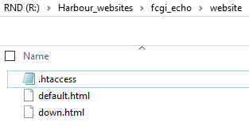
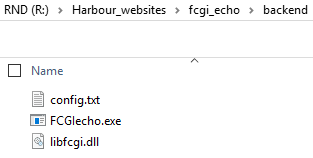
The
following is an example of a "down.html" file you can create to let the
user know when your website is under maintenance. This should happen
very rarely, since our framework will make it very easy to switch
versions. You may want to mark the website as "down" when changing
database schemas.
| File: down.html |
<!DOCTYPE html><html><head><title>Website Under Maintenance</title></head><body><h1>Website is not available at this time. Try Later.</h1></body></html>
Next step is to start VSCODE using the fcgi-echo (Workspace) located in R:\Harbour_FastCGI\Examples\echo
If you installed the repo files in different locations, you may want to use notepad or notepad++ and adjust the following files:
- \Examples\echo\fcgi-echo.code-workspace
Several lines will need to be modified. - \Examples\echo\.vscode\launch.json
Please see the "program" line. - \Examples\echo\.vscode\tasks.json
Please see the "WebsiteDrive" and "WebsiteFolder" lines.
I added some keyboard shortcuts in my user settings in VSCODE. These settings will apply to all workspaces.
To be effective in following these instructions, you must be familiar with the VSCODE Prerequisite (see other article).
- "CTRL+1" will call the VSCODE task to compile the current project in debug mode.
- "CTRL+2" will call the VSCODE task to compile the current project in release mode.
| File: keybindings.json |
{ "key": "ctrl+1", "command": "workbench.action.tasks.runTask", "args":"CompileDebug"},{ "key": "ctrl+2", "command": "workbench.action.tasks.runTask", "args":"CompileRelease"},
Open the "fcgi-echo.code-workspace" file located in the "\Examples\echo\" folder with VSCODE.
Here is what your VSCODE workspace can look like once you open the "echo.prg" file:
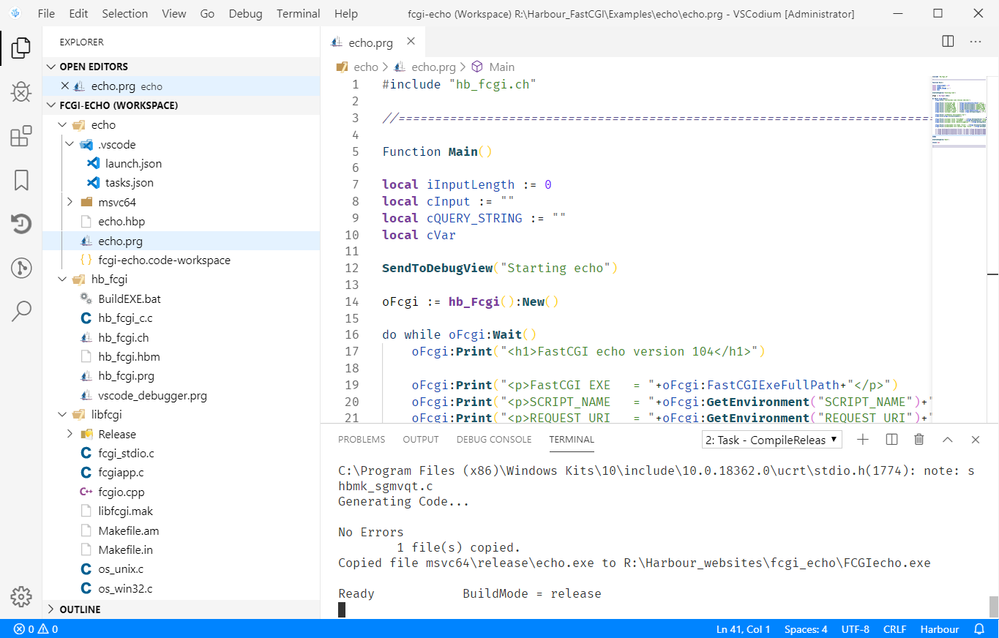
In
that VSCODE project, I also included the entire "libfcgi" and the
Apache "conf" folders. These are not required for any other FastCGI
projects you intend to create.
After you press
"CTRL+2", or start the task "CompileRelease", the "echo.exe" file will
be created and copied / renamed to FCGIecho.exe in your web site folder.
I
purposely added the prefix "FCGI" to the executables, in case you need
to taskill those programs and don't want to mistakenly shutdown any
other exe also called echo.
If you need to
debug the program, press instead "CTRL+1", or start the task
"CompileDebug", and similar behavior to "CTRL+2" will happen. There will
be more on "how to debug" later in this article.
Start the Apache server ("httpd"), and using your browser, go to http://localhost:8164/fcgi_echo/ .
The "httpd.conf" and ".htaccess" (Apache Configuration files) will redirect any call to FCGIecho.exe
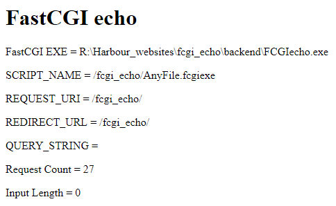
The
VSCODE build tasks (debug and release) will update the ".htaccess" file
and compile and place a FCGIecho.exe file in the folder used by Apache.
Let's take a look at the VSCODE "task.json" file, located in the "\Examples\echo\.vscode\" folder.
We have 4 VSCODE tasks defined in the "tasks.json" file:
- "CompileRelease", as the name implies, is used to build the "FCGIecho.exe". It will also place a copy in the folder published by the Apache server, in addition to updating the ".htacces" file.
- "CompileDebug", as the name implies, is used to build the "FCGIecho.exe" in debug mode. It will do the same tasks as "CompileRelease"
- "KillFcgiExe" is not needed, but left as an example of how to stop FastCGI apps. This is not the recommended way, since the cleanup code would not be executed.
- "SoftKillFcgiExe" is called by "CompileRelease" and "CompileDebug". It is used to trigger a controlled shutdown (kill) of the FastCGI EXE to be replaced.
| File: tasks.json |
{ // See https://go.microsoft.com/fwlink/?LinkId=733558 // for the documentation about the tasks.json format "version": "2.0.0", "tasks": [ { "label": "CompileRelease", "type": "shell", "command": "${workspaceFolder}\\..\\..\\hb_fcgi\\BuildEXE.bat", "options": { "cwd": "${workspaceFolder}", "env": {"EXEName":"echo", "BuildMode":"release", "HB_COMPILER":"msvc64", "WebsiteDrive":"R:", "WebsiteFolder":"\\Harbour_websites\\fcgi_echo\\" } }, "dependsOrder": "sequence", "dependsOn":["SoftKillFcgiExe"], "presentation": { "echo": true, "reveal": "always", "focus": true, "panel": "shared", "showReuseMessage": false, "clear": true } }, { "label": "CompileDebug", "type": "shell", "command": "${workspaceFolder}\\..\\..\\hb_fcgi\\BuildEXE.bat", "options": { "cwd": "${workspaceFolder}", "env": { "EXEName":"echo", "BuildMode":"debug", "HB_COMPILER":"msvc64", "WebsiteDrive":"R:", "WebsiteFolder":"\\Harbour_websites\\fcgi_echo\\" } }, "dependsOrder": "sequence", "dependsOn":["SoftKillFcgiExe"], "presentation": { "echo": true, "reveal": "always", "focus": true, "panel": "shared", "showReuseMessage": false, "clear": true } }, { "label":"KillFcgiExe", "type": "shell", "command":"taskkill", "args": ["/IM","FCGIecho.exe","/f","/t"] }, { "label":"SoftKillFcgiExe", "type": "shell", "command":"${workspaceFolder}\\..\\..\\FCGITaskManager\\msvc64\\release\\FCGITaskManager.exe", "args": ["kill","http","localhost","8164","/fcgi_echo/","R:/Harbour_websites/fcgi_echo/","FCGIecho",""] } ]}
Using Postman
If
you want to see the "echo" FastCGI working with POST requests, meaning
submitting a form and / or uploading files, the easiest is to use the
Postman app.
Postman is one of the most used tools for testing
Rest API services. You can use the Harbour_FastCGI to create a Rest API
of your own.
Postman is a commercial program but is free for "Individuals & Small Teams".
Millions of web developers are using this tool. Download it from: https://www.getpostman.com/
You
will be asked to create an account, with an email address. A nice
feature is that all your settings are stored on the Postman Inc.
servers. But remember not to use any confidential data!
Here
is a sample configuration you can use to test the Echo program. If you
want to store uploaded files, please edit the "echo.prg" file to specify
the location to store uploaded files.
Notes:
- Switch between GET and POST request types
- Enter a full URL
- Toggle to "Body" and enter field (html) names and values. Switch to "form-data" if you also want to upload files
- Enter any fields name (key) and values. Currently Harbour_FastCGI only supports "form-data" and "x-www-form-urlencoded"
- In the Key column you can mark it to select a file, instead of a field name/value
- You can switch between different display modes of the response, after you press "Send"
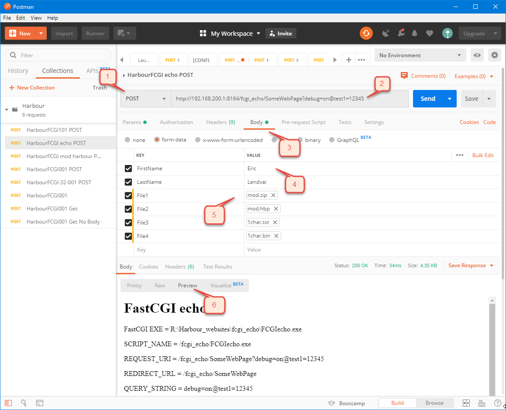
FCGITaskManager program
On the Harbour_FastCGI repo, you can also review and use the FCGITaskManager program.
Before I explain what FCGITaskManager does, let's look at how FastCGI apps are actually loaded in memory.
In the following image, we see 2 web apps, FCGIecho and FCGImod_harbour.
We have 2 instances of FCGIecho.exe and 3 other different versions, FCGIecho1.exe, FCGIecho2.exe and FCGIecho3.exe.
We also have a single version / instance of FCGImod_harbour.exe
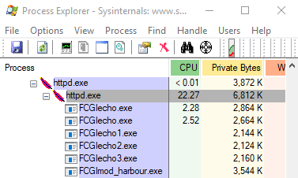
In the Harbour_FastCGI framework, the "echo" app will have an executable formatted as "FCGI"+"echo"+"version text".exe
So here we have 2 instances with no version info: "FCGIecho.exe"
A version "1" as the file "FCGIecho1.exe" and so on for "2" and "3"
The
reason we had 2 instances of "FCGIecho.exe", is that on this computer I
purposely ran some "website stress loader" program to have the Apache
server start a second instance.
The method to redirect requests to a particular version of your app is by updating the ".htaccess" file accordingly.
We should, simultaneously and properly, terminate all other versions.
As a result, we normally would, in the picture above, only have a single version of "echo" and "mod_harbour" apps.
And
this where the will use the "FCGITaskManager.exe" program. It is a
console app (Windows only for now) that will help you with the following
tasks:
- "kill" - stops all instances of a particular version of your app. It will not terminate other versions and will set the specified version as the "current version".
- "activate" - makes the specified version the "current version". It will terminate all other running versions.
- "down" - tops all instances of all versions of your app. It redirects all web page requests to a "down.html" page.
In
production, usually the "down" and "activate" tasks would be used,
while in development the "kill" should be called before your app is
recompiled/published.
The concept of "stopping"
refers to signalling the app to do a proper shutdown. This is achieved
by creating a "marker file" with the same name as the executable, but
with the extension ".kill", then calling that executable via web page
request. The main request loop in the FastCGI app will detect the
".kill" file and execute the shutdown process and terminate. The
shutdown process will call the "OnShutdown" method of the FastCGI main
class, which you probably sub-classed to add your own code.
The following is a list of parameters the FCGITaskManager program is expecting:
- Action to take. "kill", "activate" or "down"
- Protocol. "http" or "https"
- Host+Domain. For example "localhost", "www.mydomainname.com"
- Port. For example "80" or "443"
- Website Folder. For example "/", "/fcgi_echo/"
- Fcgi Folder. Path where the FastCGI app is located. For example: "R:\Harbour_websites\fcgi_echo\"
- Fcgi App Name. The app name, without the "FCGI" prefix. For example: "echo"
- Fcgi App Version. Blank for no version (while developing), any text with no blanks when deploying on live server.
For example, in the "echo" application, there is a "fcgi-echo.code-workspace" VSCODE workspace definition file.
Using the VSCODE extension "VsCode Action Buttons", I added 3 buttons on the bottom on the VSCODE editor to manage the fcgi-echo web site.
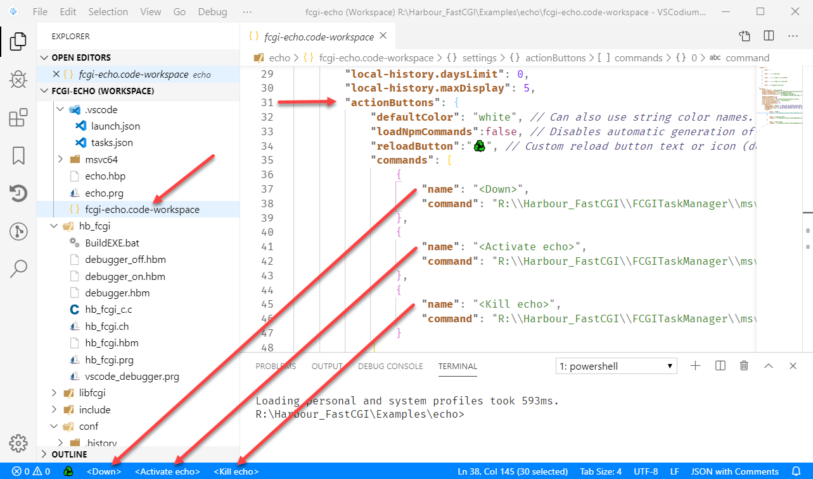
The following is the entire command for the "<Down>" button (Had to use double "\" due to using a JSON file):
"R:\\Harbour_FastCGI\\FCGITaskManager\\msvc64\\release\\FCGITaskManager.exe
down http localhost 8164 /fcgi_echo/ R:/Harbour_websites/fcgi_echo/
echo"
The following is an example of the ".htaccess" file when the website is marked as "down":
RewriteRule "^" "/fcgi_echo/down.html" [END]
The following is an example of the ".htaccess" file when the website has the "no version specific" "echo" app activated:
FallbackResource /fcgi_echo/FCGIecho.exe
FcgidWrapper "R:/Harbour_websites/fcgi_echo/FCGIecho.exe" .mainexe virtual
FcgidWrapper "R:/Harbour_websites/fcgi_echo/FCGIecho.exe" .mainexe virtual
Debugging with VSCODE
Let's review how to debug the "echo" app:
In VSCODE, we first have to setup a "launch.json" file.
Like all the other files, it is already in the repo.
The
main difference with the most traditional way of debugging is that
here, we need to "attach" to an already running program, instead of
having the debugger start the exe to be debugged. Luckily the Harbour
VSCODE extension by Antonino Perricone supports the "attach" method.
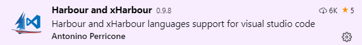
| File: launch.json |
{ // Use IntelliSense to learn about possible attributes. // Hover to view descriptions of existing attributes. // For more information, visit: https://go.microsoft.com/fwlink/?linkid=830387 "version": "0.2.0", "configurations": [ { "type": "harbour-dbg", "request": "attach", "name": "Attach Program echo.exe", "program": "R:\\Harbour_websites\\fcgi_echo\\backend\\FCGIecho.exe","sourcePaths": [ "${workspaceFolder}" ] } ]}
For
debugging to work, the program also needs to be compiled by Harbour
with the "-B" flag. This will add line number references, among other
things, inside the executable.
Also any "Altd()" function call
will then pause the program and open that PRG file in VSCODE at the
line following the "Altd()" call.
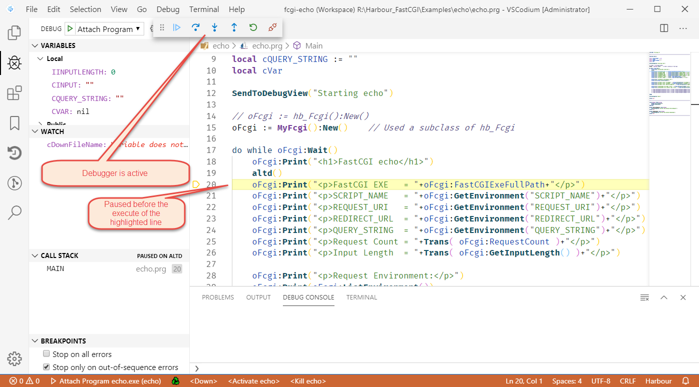
Because
the debugger is used in "attach" mode, if you forget to start the
debugger before you request a web page, which then would call your code,
the program will not "hang" waiting for the debugger. This is a major
advantage of the "attach" mode.
Also, if you have a run time
error, unless you have an error handling process, the debugger will also
pause in the correct file and line number.
To
make it easy to compile and deploy your programs, I created the VSCODE
tasks. Please refer to the section above, "Your First FastCGI Web Site"
for the description of the "tasks.json" file.
Before you start the debugger (F5), run the "CompileDebug" task (CTRL+1) to rebuild your program in debug mode.
If no compilation occurred, you should see the following:
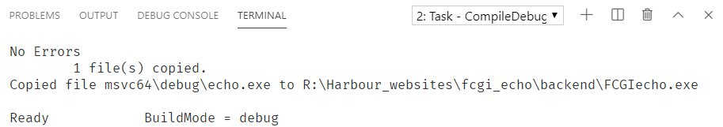
Note that the "BuildMode" is "debug".
Once the debugger is running, simply go to http://localhost:8164/fcgi_echo/ for example.
If
you are updating the version of the Harbour Extension, please re-export
its debugger to "...\hb_fcgi\vscode_debugger.prg". All the instructions
about how use the debugger and how to export the prg is in the
"Developing and Debugging Harbour Programs with VSCODE (Visual Studio
Code)" article.
Extra Debugging Options under Windows
Under Windows, there is a way to display messages in a "Tracing" Window, called DebugView.
Please download the DebugView program from https://docs.microsoft.com/en-us/sysinternals/downloads/debugview
From within your Harbour source code, simply call the function, SendToDebugView(cText,[xValue])
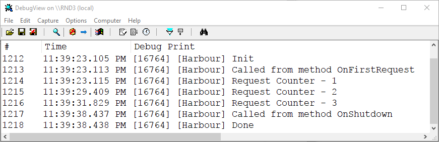
To
ensure only your messages are displayed, and not all debug messages
from Windows or any other applications, use the following settings:
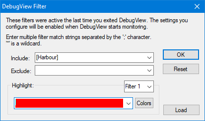
Here are the options I recommend using:
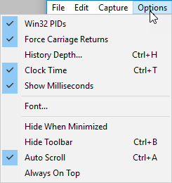
Examples of calls:
SendToDebugView("Request Counter",oFcgi:RequestCount)
SendToDebugView("Called from method OnShutdown")
Anatomy of the echo app
The purpose of this section is to only review the "echo.prg", not the internals of the hb_Fcgi class.
The entire concept of FastCGI is around its main request loop which starts at line 17 and ends at line 45.
All the APIs and functionality of the FastCGI interface is wrapped into a single class hb_Fcgi, and a single public variable oFcgi will have an object of that class or sub-class.
On line 14, we have an example of creating an object directly from the hb_Fcgi
class. But since I wanted to demonstrate how to add your own code
called at the first request and on shutdown, we needed to create a
sub-class (line 53) and create the oFcgi from that sub-class (line 15). Lets call the sub-class MyFcgi.
The first major step the program does is call oFcgi:Wait() (line 17), and it waits until a web page request is received or a shutdown is requested.
Then all the code, until we reach the enddo (line 45), will be the actual code to create a response.
Calls to oFcgi:Print() is used to send html content out. In the hb_fcgi.ch file, I defined the "?" operator to behave as oFcgi:Print(). But for readability I continued to use the Print() method.
Lines 58 and 62 are examples of how to add code to the hooks of the sub-class.
See the for additional explanations.
| File: echo.prg |
#include "hb_fcgi.ch"//=================================================================================================================Function Main()local iInputLength := 0local cInput := ""local cQUERY_STRING := ""local cVarSendToDebugView("Starting echo")// oFcgi := hb_Fcgi():New() oFcgi := MyFcgi():New() // Used a subclass of hb_Fcgi do while oFcgi:Wait() SendToDebugView("Request Counter",oFcgi:RequestCount) oFcgi:Print("<h1>FastCGI echo</h1>") //altd() oFcgi:Print("<p>FastCGI EXE = "+oFcgi:FastCGIExeFullPath+"</p>") oFcgi:Print("<p>SCRIPT_NAME = "+oFcgi:GetEnvironment("SCRIPT_NAME")+"</p>") oFcgi:Print("<p>REQUEST_URI = "+oFcgi:GetEnvironment("REQUEST_URI")+"</p>") oFcgi:Print("<p>REDIRECT_URL = "+oFcgi:GetEnvironment("REDIRECT_URL")+"</p>") oFcgi:Print("<p>QUERY_STRING = "+oFcgi:GetEnvironment("QUERY_STRING")+"</p>") oFcgi:Print("<p>Request Count = "+Trans( oFcgi:RequestCount )+"</p>") oFcgi:Print("<p>Input Length = "+Trans( oFcgi:GetInputLength() )+"</p>") oFcgi:Print("<p>Request Environment:</p>") oFcgi:Print(oFcgi:ListEnvironment()) oFcgi:Print([<p>Input Field "FirstName" = ]+oFcgi:GetInputValue("FirstName")+[</p>]) oFcgi:Print([<p>Input Field "LastName" = ]+oFcgi:GetInputValue("LastName")+[</p>]) oFcgi:Print([<p>Input Field "NotExistingValue" = ]+oFcgi:GetInputValue("Bogus")+[</p>]) oFcgi:Print([<p>Uploaded File Name "File1" = ]+oFcgi:GetInputFileName("File1")+[</p>]) oFcgi:Print([<p>Uploaded File Content Type "File1" = ]+oFcgi:GetInputFileContentType("File1")+[</p>]) // oFcgi:SaveInputFileContent("File1","d:\MyFolder\"+oFcgi:GetInputFileName("File1")) // oFcgi:SaveInputFileContent("File2","d:\MyFolder\"+oFcgi:GetInputFileName("File2")) // oFcgi:SaveInputFileContent("File3","d:\MyFolder\"+oFcgi:GetInputFileName("File3")) // oFcgi:SaveInputFileContent("File4","d:\MyFolder\"+oFcgi:GetInputFileName("File4"))enddo SendToDebugView("Done")return nil//=================================================================================================================class MyFcgi from hb_Fcgi method OnFirstRequest() method OnShutdown()endclassmethod OnFirstRequest class MyFcgi SendToDebugView("Called from method OnFirstRequest") return nilmethod OnShutdown class MyFcgi SendToDebugView("Called from method OnShutdown") return nil//=================================================================================================================
Conclusion
Web development is not for the faint of heart; this FastCGI project is only the foundation for future web frameworks.
I
hope you find this useful for converting your CGI app to FastCGI apps,
or you at minimum use this information as a gateway to port your desktop
applications to the web.
The browser did not close this tab. It may have been opened directly instead of from the Articles list. Use Back to Articles.